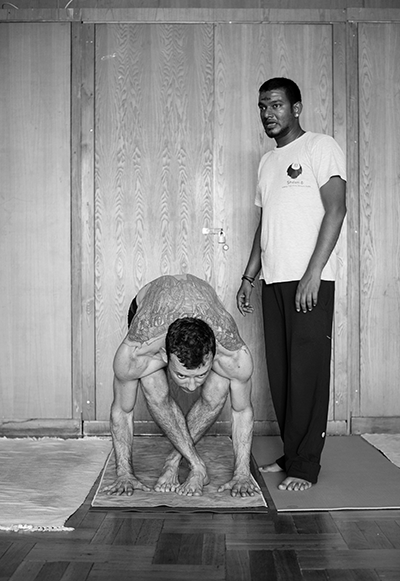
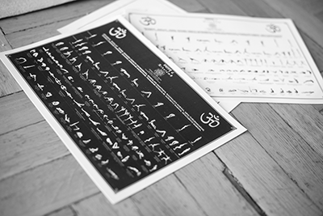
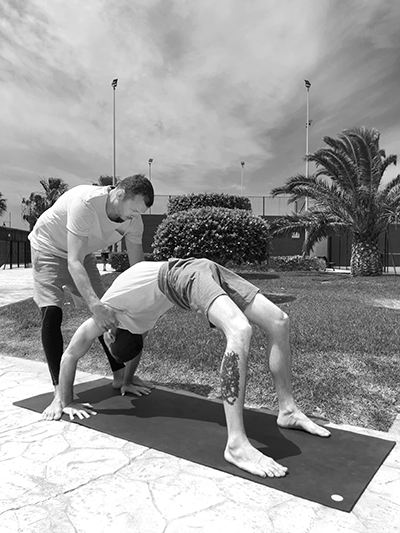
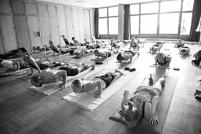
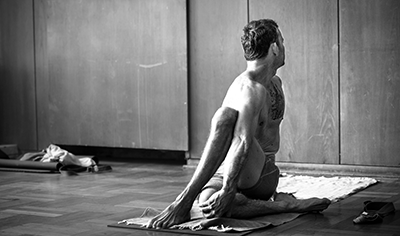

Online Jógaoktatás
„Semmiféle teljesítmény vagy eredmény nem lehetséges erőfeszítés nélkül” Sri T. Krishnamacharya

Bocsányi Gábor vagyok, Certified Ashtanga Vinyasa Jógaoktató
/ STHALAM 8 Ashtanga Yoga Shala Mysore, India /Rólam
2005-ben ismerkedtem meg a jógával, 2012 óta oktatok és adom tovább, amit megtapasztaltam és megtanultam. Több irányzat kipróbálása után, 2010-ben Új-Zélandon találtam rá egy nagyon magasszintű tanárra és az Ashtanga Vinyasa jóga irányzatra. A tanárom, Tiffany Fletwood hatására az első órán szerelmes lettem ebbe az irányzatba. Tiffany, Matthew Sweeney tanítványa és asszisztense volt. Fél év mindennapos gyakorlás után 2011-ben elutaztam Indiába, Mysore-ba, a városba ahonnan elindult az Ashtanga Vinyasa jóga. Szerencsémre mindjárt megtaláltam a Gurum, Ajay Kumar-t a Sthalam 8 Yoga Shala-ban, akit azóta is követek és Ő is támogat engem. Ajay közvetlen tanítványa volt B.N.S. Iyengar-nak, aki közvetlen tanítványa volt Sri T. Krishnamacharya-nak. Az évek alatt baráti kapcsolat is alakult ki közöttünk Ajay-jal. Rendszeresen jártam vissza Mysore-ba, hónapokat eltöltve a Yoga Shalában, hogy minél többet tanuljak és tapasztaljak. 2016-tól abban a megtiszteltetésben volt részem, hogy Ajay minden évben ellátogatott Magyarországra, Vácra, és 7-10 napos workshopot tartott a jógaiskolámban. Követte és támogatta a fejlődésünket egész évben, ezzel biztosítva a Parampara (tanítói láncolat) életben tartását. Rajtam keresztül jutott el a tanítása mindenkihez, aki gyakorolt az Astanga Jógaiskola Vácban, melyet 2012-től 2020-ig működtettem. Ezidő alatt közel 1000 gyakorló fordult meg nálam. Mindvégig a legfontosabb irányelv a tradicionális tanítás követése volt, és most is azt tartom elsődlegesnek. Fontosnak tartom, hogy megpróbáljam úgy tovább adni a tanultakat, ahogyan én kaptam és nem elvenni vagy hozzátenni. Az elmúlt 18 évben sok neves Ashtanga gyakorlót és tanárt ismertem meg, gyakoroltam együtt velük. A legjobban akkor tudtam fejlődni, amikor a választott Gurum, Ajay Kumar tanításait követtem és teszem a mai napig.
Mit tudok megtanítani
 Le kell szögeznem, hogy nem tudom helyetted elvégezni a munkát, csak a helyes irányt tudom megmutatni, amit már megtapasztaltam, megtanultam. Nem az a dolgom, hogy jobb kedvre derítselek, kedveskedjek, meghallgassam a gondjaidat. A módszert tudom a kezedbe adni, ami megoldja a problémáid és boldog lehetsz általa. Ha elköteleződsz és követed a tanításokat, amiket csak továbbítok - nem én találom ki - akkor az eredmény nem fog elmaradni. A Gurum Ajay Kumar Mysore-ból, Indiából, akinek 2010-óta követem a tanításait. Fontosnak tartom a Parampara (tanítói láncolat) tiszteletben tartását, ezért csak azt tanítom, amire meghatalmazást kaptam Ajay-tól, amihez áldását adta, hogy felkészültem továbbadni másoknak. Jelenleg is támogat a tanításban és figyelemmel kísér. Ajay-ról itt olvashatsz bővebben. Az órákon mindenkivel a saját szintjéhez mérten foglalkozom a jógafilozófia, a jama-nijama, az Ashtanga Vinyasa jóga 1-2. sorozat, a vinyasa számolás és a pranajama eszközeivel. Meg tudom mutatni, hogyan alkalmazd mindezt a jógamatracon, illetve hogyan segít mindez a matracon túl a hétköznapi életben, továbbá hogyan lehetsz a jóga gyakorlásával önazonons, kiegyensúlyozott, magabiztos, boldog ember.
Szolgáltatások
Ingyenes konzultáció, egyeztetés és felmérés, mielőtt elkezdjük a közös munkát
Személyre szabott magánóra:
 Ezen az órán teljesen személyre szabjuk közösen az irányt. Az ingyenes konzultáció alkalmával megkérdezem, hogy mi a célod az Ashtanga Vinyasa jóga gyakorlással és hogy hova szeretnél eljutni vele, mit vársz tőle. Megbeszéljük, hogy valóban a jóga-e a megfelelő eszköz és tudok-e segíteni a céljaidban. Megkeressük a megfelelő gyakorlási módot, hogy minél hatékonyabb legyen a fejlődés. Ez az óratípus a legmegfelelőbb, ha a filozófiában szeretnél elmélyülni, ha az ászana ismeret érdekel vagy ha haladó gyakorló vagy és úgy érzed, hogy elakadtál valahol a fejlődésben és szeretnél továbbjutni. Pl: nem fejlődik a hátrahajlásod, szeretnéd érteni, mi az a „Triszthana” és helyesen használni, nem érted a vinyasza számolást, szeretnél kézenállni vagy fejenállni, hátra vagy előre ugrani stb. Az óra tematikája: az elméleti alapok felépítése, az ászanák megértése és fejlesztése, idővel a fejlődéshez mérten haladóbb filozófia és ászanák gyakorlása. Haladók esetnén haladó elmélet majd gyakorlás a szintnek megfelelően. A cél az elméleti és gyakorlati tudás együttalkalmazása, a jóga élmény megtapasztalása. De ha egyszerűen csak rám bízod magad, megmondom hol tudnál fejlődni, mit kell megtanulni és megérteni, hogy elérhesd a szintet, ahol már megjelenik a jóga élmény. A részvételhez válassz időpontot az ingyenes konzultációhoz.
FoglalásCsoportos óra:
 Vezetett Ashtanga Vinyasa első sorozat a vinyasa számolás és a triszthana szerint, folyamatos instrukciókkal az aktuális ászanáról, hogyan kell helyesen kivitelezni, mire kell figyelni, hogy érvényesüljön a pozitív hatása. Diktálom a légzés ritmusát, mikor melyik dristit (fókuszált tekintet) kell alkalmazni és melyik bandhát (energia zár) kell tartani. A rendszeres vezetett órák segíthetnek egy jövőbeni önálló, biztonságos gyakorlást kialakítani. A foglalás gombra kattintva láthatóak az aktuális órák.
Foglalás1 hónapos intenzív program:
 A valódi eredmény eléréséhez a tradicionális jóga gyakorlás és napirend az út. Segítek létrehozni és fogom a kezed az egész hónap alatt, míg kialakul a rutin. Az Ashtanga Vinyasa jóga rendszer tökéletes, ha érdekel mit adhat a jóga tudománya. Több hónap rendszeres, helyes gyakorlás már képes megváltoztatni bárki életét. Már 1 hónap helyes életvitel és gyakorlás, kellő alapot és akár egy életre szóló élményt adhat. Válaszd az ingyenes konzultációt és kialakítunk egy, a szintedhez mért, havi rutint.
Foglalás